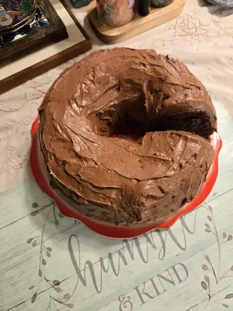

This ooey gooey chocolate pudding cake is moist, delicious, fudgy yet fluffy, and so delicious that it will have you wanting seconds. It has a fabulous texture and it's easy to make.
Preheat the oven to 350 degrees F (180 degrees C). Grease a Bundt cake pan (I like Baker’s Joy spray).
Chop the chocolate chips; set aside.
Add cake mix, instant pudding mix, sour cream, eggs, melted butter, and water to a large bowl. Beat with an electric mixer until creamy and fluffy, about 3 minutes. Fold in chopped chocolate chips.
Pour batter into the prepared Bundt pan. Smooth and spread evenly.
Bake in the preheated oven until a toothpick inserted near the center comes out clean, 40 to 44 minutes. Remove from the oven, let cool for a full 10 minutes, and then invert onto a cake plate. Let cool completely, about 50 minutes.
Meanwhile, for frosting, combine softened butter, confectioner’s sugar, milk, vanilla, and cocoa in a medium mixing bowl. Beat until nice and creamy, about 2 minutes.
Frost cooled cake. Cut a slice and enjoy!
